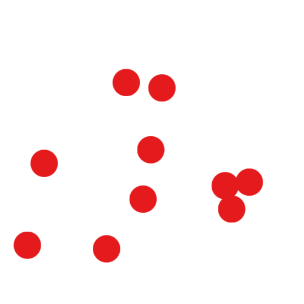
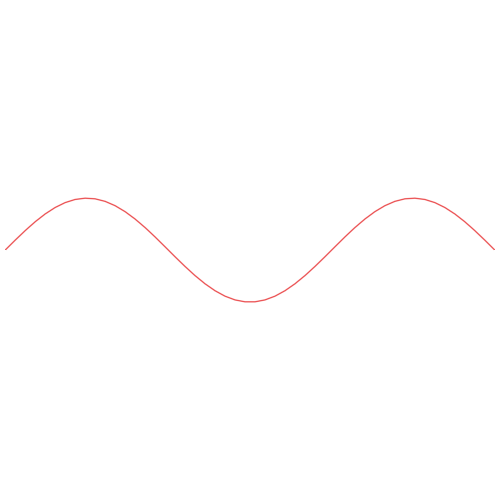
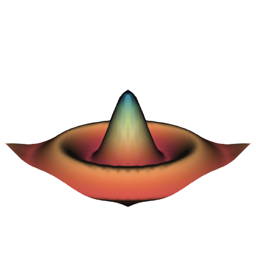
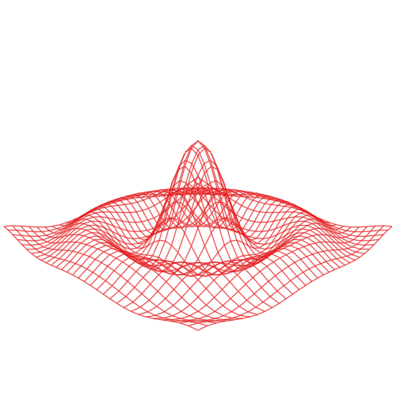
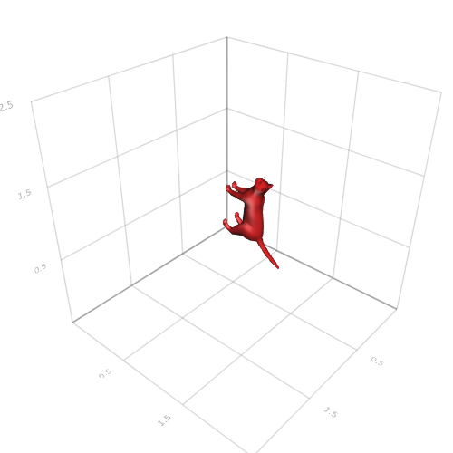
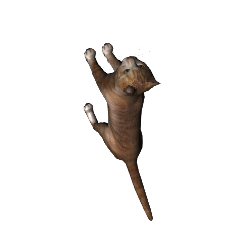
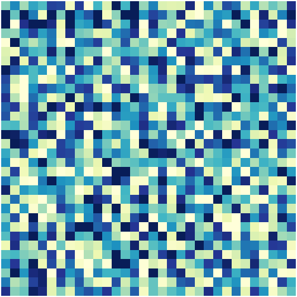
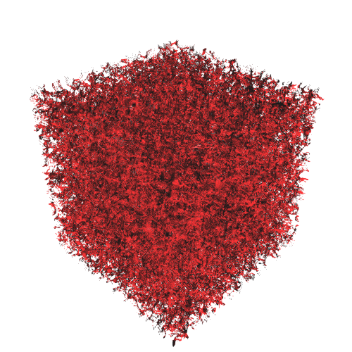

Functions
Primitive plotting functions. These are the most atomic operations from which one can stack together more complex plots
Scatter
using MakiE
scene = Scene(resolution = (500, 500))
scatter(rand(10), rand(10))
center!(scene)
MakiE.scatter — Function.scatter(x, y, z) / scatter(x, y) / scatter(positions)Plots a marker for each element in xyz/positions
Attributes:
Attribute x, convert function to_array which accepts:
`AbstractArray`____________________
Attribute y, convert function to_array which accepts:
`AbstractArray`____________________
Attribute positions, convert function to_positions which accepts:
`NTuple{2, AbstractArray{Float}}` for 2D points
`NTuple{3, AbstractArray{Float}}` for 3D points
`view(AbstractArray{Point}, idx)` for a subset of points. Can be shared (so you can plot subsets of the same data)!
`AbstractArray{T}` where T needs to have `length` defined and must be convertible to a Point____________________
Attribute colormap, convert function to_colormap which accepts:
An `AbstractVector{T}` with any object that [to_color](@ref) accepts
Tuple(A, B) or Pair{A, B} with any object that [to_color](@ref) accepts
A Symbol/String naming the gradient. For more on what names are available please see: `available_gradients()`____________________
Attribute intensity, convert function to_intensity which accepts:
`AbstractArray`____________________
Attribute colornorm, convert function to_colornorm which accepts:
anything that can be converted to `Vec2f0` (e.g. `Tuple`, `Vector`)
If colornorm is `nothing` will default to calculate the extrema from `intensity`____________________
Attribute marker, convert function to_spritemarker which accepts:
`GeometryTypes.Circle(Point2(...), radius)`
`Type{GeometryTypes.Circle}`
`Type{GeometryTypes.Rectangle}`
Any `Char`, including unicode
Matrix of AbstractFloat will be interpreted as a distancefield (negative numbers outside shape, positive inside)
Any AbstractMatrix{<: Colorant} or other image type
A `Symbol` - Available options can be printed with `available_marker_symbols()`
Vector of anything that is accepted as a single marker will give each point it's own marker. Note that it needs to be a uniform vector with the same element type!____________________
Attribute strokecolor, convert function to_color which accepts:
`Colors.Colorants`
A `Symbol` naming a color, e.g. `:black`
A `String` naming a color, e.g. `:black` or html style `#rrggbb`
A Tuple or Array with elements that `to_color` accepts. If Array is a Matrix it will get interpreted as an Image
Tuple{<: ColorLike, <: AbstractFloat} for a transparent color____________________
Attribute strokewidth, convert function to_float which accepts:
Any Object convertible to Floatingpoint____________________
Attribute glowcolor, convert function to_color which accepts:
`Colors.Colorants`
A `Symbol` naming a color, e.g. `:black`
A `String` naming a color, e.g. `:black` or html style `#rrggbb`
A Tuple or Array with elements that `to_color` accepts. If Array is a Matrix it will get interpreted as an Image
Tuple{<: ColorLike, <: AbstractFloat} for a transparent color____________________
Attribute glowwidth, convert function to_float which accepts:
Any Object convertible to Floatingpoint____________________
Attribute markersize, convert function to_markersize which accepts:
Anything that can be converted to `Vec2f0` for x, y scale____________________
Attribute rotations, convert function to_rotations which accepts:
`Billboard()` for a rotation that will always face the camera
Any AbstractArray which elements can be converted to Vec4 (as a quaternion x, y, z, w)____________________
Lines
using MakiE
scene = Scene(resolution = (500, 500))
x = linspace(0, 3pi)
lines(x, sin.(x))
center!(scene)
MakiE.lines — Function.lines(x, y, z) / lines(x, y) / lines(positions)Plots a connected line for each element in xyz/positions
Attributes:
Attribute x, convert function to_array which accepts:
`AbstractArray`____________________
Attribute y, convert function to_array which accepts:
`AbstractArray`____________________
Attribute positions, convert function to_positions which accepts:
`NTuple{2, AbstractArray{Float}}` for 2D points
`NTuple{3, AbstractArray{Float}}` for 3D points
`view(AbstractArray{Point}, idx)` for a subset of points. Can be shared (so you can plot subsets of the same data)!
`AbstractArray{T}` where T needs to have `length` defined and must be convertible to a Point____________________
Attribute colormap, convert function to_colormap which accepts:
An `AbstractVector{T}` with any object that [to_color](@ref) accepts
Tuple(A, B) or Pair{A, B} with any object that [to_color](@ref) accepts
A Symbol/String naming the gradient. For more on what names are available please see: `available_gradients()`____________________
Attribute intensity, convert function to_intensity which accepts:
`AbstractArray`____________________
Attribute colornorm, convert function to_colornorm which accepts:
anything that can be converted to `Vec2f0` (e.g. `Tuple`, `Vector`)
If colornorm is `nothing` will default to calculate the extrema from `intensity`____________________
Attribute linewidth, convert function to_float which accepts:
Any Object convertible to Floatingpoint____________________
Attribute linestyle, convert function to_linestyle which accepts:
`Nothing` for no style
`AbstractVector{<:AbstractFloat}` for denoting sequences of fill/nofill. E.g. [0.5, 0.8, 1.2] will result in 0.5 filled, 0.3 unfilled, 0.4 filled. 1.0 unit is one linewidth!
A `Symbol` equal to `:dash`, `:dot`, `:dashdot`, `:dashdotdot`____________________
Attribute drawover, convert function to_bool which accepts:
To boolean
Accepts Tuple of Bool____________________
Surface
using MakiE
scene = Scene(resolution = (500, 500))
N = 32
function xy_data(x,y,i, N)
x = ((x/N)-0.5)*i
y = ((y/N)-0.5)*i
r = sqrt(x*x + y*y)
res = (sin(r)/r)
isnan(res) ? 1 : res
end
z = [Float32(xy_data(x, y, 20, 32)) + 0.5 for x=1:32, y=1:32]
range = linspace(0, 3, N)
surf = surface(range, range, z, colormap = :Spectral)
center!(scene)
Wireframe
MakiE.wireframe — Function.wireframe(x, y, z) / wireframe(positions) / wireframe(mesh)Draws a wireframe either interpreted as a surface or mesh
Attributes:
using MakiE
scene = Scene(resolution = (500, 500))
surf = wireframe(range, range, z)
center!(scene)
Mesh
MakiE.mesh — Function.mesh(x, y, z) / mesh(mesh_object) / mesh(x, y, z, faces) / mesh(xyz, faces)Plots a 3D mesh
Attributes:
Attribute shading, convert function to_bool which accepts:
To boolean
Accepts Tuple of Bool____________________
Attribute attribute_id, convert function to_attribut_id which accepts:
Index into Mesh attributes, Vector{Integer}____________________
Attribute color, convert function to_color which accepts:
`Colors.Colorants`
A `Symbol` naming a color, e.g. `:black`
A `String` naming a color, e.g. `:black` or html style `#rrggbb`
A Tuple or Array with elements that `to_color` accepts. If Array is a Matrix it will get interpreted as an Image
Tuple{<: ColorLike, <: AbstractFloat} for a transparent color____________________
Attribute mesh, convert function to_mesh which accepts:
`AbstractMesh`____________________
using MakiE
scene = Scene(resolution = (500, 500))
x = [0, 1, 2, 0]
y = [0, 0, 1, 2]
z = [0, 2, 0, 1]
color = [:red, :green, :blue, :yellow]
i = [0, 0, 0, 1]
j = [1, 2, 3, 2]
k = [2, 3, 1, 3]
indices = [1, 2, 3, 1, 3, 4, 1, 4, 2, 2, 3, 4]
mesh(x, y, z, indices, color = color)
r = linspace(-0.5, 2.5, 4)
axis(r, r, r)
center!(scene)scene = Scene(resolution = (500, 500))
mesh(GLVisualize.loadasset("cat.obj"))
axis(r, r, r)
center!(scene)
save("loadedmesh.png", scene); nothing # hide
using MakiE, GeometryTypes, FileIO, GLVisualize
using GLVisualize: loadasset, assetpath
scene = Scene(resolution = (500, 500))
cat = load(assetpath("cat.obj"), GLNormalUVMesh)
MakiE.mesh(cat, color = loadasset("diffusemap.tga"))
center!(scene)WARNING: using FileIO.save in module ex-mesh conflicts with an existing identifier.
Heatmap
MakiE.heatmap — Function.heatmap(x, y, values) / heatmap(values)Plots a image on heatmap x, y (defaults to dimensions)
Attributes:
Attribute linewidth, convert function to_float which accepts:
Any Object convertible to Floatingpoint____________________
Attribute levels, convert function to_float which accepts:
Any Object convertible to Floatingpoint____________________
Attribute heatmap, convert function to_array which accepts:
`AbstractArray`____________________
Attribute colormap, convert function to_colormap which accepts:
An `AbstractVector{T}` with any object that [to_color](@ref) accepts
Tuple(A, B) or Pair{A, B} with any object that [to_color](@ref) accepts
A Symbol/String naming the gradient. For more on what names are available please see: `available_gradients()`____________________
____________________
using MakiE
scene = Scene(resolution = (500, 500))
heatmap(rand(32, 32))
center!(scene)
Volume
MakiE.volume — Function.volume(volume_data)Plots a volume
Attributes:
Attribute volume, convert function to_array which accepts:
`AbstractArray`____________________
Attribute colormap, convert function to_colormap which accepts:
An `AbstractVector{T}` with any object that [to_color](@ref) accepts
Tuple(A, B) or Pair{A, B} with any object that [to_color](@ref) accepts
A Symbol/String naming the gradient. For more on what names are available please see: `available_gradients()`____________________
____________________
Attribute algorithm, convert function to_volume_algorithm which accepts:
Enum values: `IsoValue` `Absorption` `MaximumIntensityProjection` `AbsorptionRGBA` `IndexedAbsorptionRGBA`
Symbol/String: iso, absorption, mip, absorptionrgba, indexedabsorption____________________
Attribute absorption, convert function to_float which accepts:
Any Object convertible to Floatingpoint____________________
Attribute isovalue, convert function to_float which accepts:
Any Object convertible to Floatingpoint____________________
Attribute isorange, convert function to_float which accepts:
Any Object convertible to Floatingpoint____________________
#julia
using MakiE
scene = Scene()
volume(rand(32, 32, 32), algorithm = :iso)
center!(scene)
image
volume
text
poly